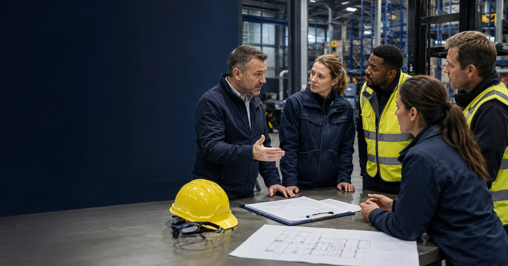

NEBOSH IGC nieuw examen 2026: wat verandert er voor jou?
NEBOSH heeft het IGC volledig herzien voor 2026. Nieuw syllabus, nieuwe examenvorm GIC1 en GIC2. Wat betekent dit voor jou als Nederlandse veiligheidskundige?
Lees meer →Welkom op het kenniscentrum van SafetyXAcademy. Hier delen we praktische inzichten over NEBOSH opleidingen, HSE carrières, ZZP-opdrachten en dagtarieven voor Nederlandstalige veiligheidskundigen. Of je nu net begint met je HSE-carrière of al ervaring hebt: hier vind je nuttige tips en inzichten.
NEBOSH heeft het IGC volledig herzien voor 2026. Nieuw syllabus, nieuwe examenvorm GIC1 en GIC2. Wat betekent dit voor jou als Nederlandse veiligheidskundige?
Lees meer →Wat verdient een veiligheidskundige in 2026? Overzicht van salaris in loondienst, MVK/HVK, ZZP-uurtarieven en internationale dagtarieven — met praktische cijfers en FAQ.
Lees meer →Alles over NEBOSH IGC in één gids: IG1 en IG2, kosten vanaf €3.500, studiebelasting, Engels open-book examen en carrièremogelijkheden voor HSE-professionals in NL en BE.
Lees meer →
Per 1 juli 2026 wijzigt artikel 12 van de Arbowet: raadplegen wordt verplicht én handhaafbaar. Wat betekent dit voor jou als HSE'er? Praktische uitleg en checklist.
Lees meer →Wat betekenen de spanningen in het Midden-Oosten voor HSE-professionals? Over strengere audits, stijgende dagtarieven en waarom NEBOSH IGC nu extra telt.
Lees meer →
Wat is NEBOSH IGC precies, voor wie is deze opleiding bedoeld en waarom is het interessant voor Nederlandstalige veiligheidskundigen die willen werken in havens, offshore of internationale projecten? In dit artikel leggen we alles uit over de NEBOSH International General Certificate.
Lees meer →
Vergelijk NEBOSH IGC met de Nederlandse MVK-opleiding. Wat zijn de kostenverschillen? Waar wordt elk diploma erkend? En wat past beter bij jouw ambities? Een eerlijke vergelijking om je te helpen de juiste keuze te maken voor je HSE-carrière.
Lees meer →
Een praktisch overzicht van HSE ZZP dagtarieven in de havens van Rotterdam en Antwerpen. Wat verdienen veiligheidskundigen met NEBOSH in de Benelux-havens? Welke factoren bepalen je dagtarief en hoe kun je je marktwaarde verhogen?
Lees meer →Complete gids voor NEBOSH-studenten in Rotterdam: Westplein 12, Veerhaven en Scheepvaartkwartier. Ontdek de beste lunchspots, iconische landmarks zoals de Erasmusbrug en Euromast, praktische tips voor parkeren en OV, en waarom deze locatie perfect is voor internationale HSE-carrières.
Lees meer →